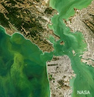
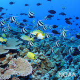
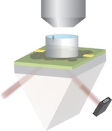

Research
From photosynthesis to bioelectricity, the flow of charge and energy at the nanoscale plays a central role throughout the natural world. My research uses laser light to probe, control, and image electronic behavior at the nanoscale in condensed matter and biological systems. Specifically, I develop new optical techniques using X-ray to infrared wavelengths, control over polarization and phase, and high spatiotemporal resolution to enable a wide range of imaging, optical spectroscopy, and scanning probe tools to advance both our basic scientific understanding and to enable the development of functional materials and the invention of new technologies.
The oceans are host to diverse microorganisms capable of cyling near all chemical elements and producing over half of the oxygen in the atmosphere. Quantitative measurements of the marine metabolic cycle is central to both basic scientific discovery and to pathways towards climate resilience. By developing methods to quantitatively measure metabolites and target nucleotides in situ in the ocean, I study how environmental drivers impact the metabolic activity of photosynthetic marine microbes and investigate new approaches to biodiversity monitoring using environmental DNA.
|

|
Nanophotonics for in situ chemical oceanography
Climate change is driving fundamental shifts to microbial lifecycles in both marine and freshwater ecosystems. Photosynthetic microbes, phytoplankton, are responsible for half of the global photosynthetic carbon fixation and at least half of the world's oxygen production. However, under certain environmental conditions, phytoplankton can undergo explosive growth, forming dense harmful algal blooms (HABs) that can cover hundreds of square kilometers and can release powerful biotoxins that harm humans and wildlife, contaminate drinking water sources, and pose an economic threat to coastal economies. Understanding how environmental drivers impact plankton nutrient cycling and toxin production remains a challenge.
In collaboration with the Monterey Bay Aquarium Research Institute (MBARI) and National Centers for Coastal Ocean Science (NCCOS/NOAA), I am developing an optical sensor capable of quantitatively detecting phytoplankton toxins and the genes that encode for them onboard autonomous underwater vehicles. By quantitatively correlating gene expression and metabolic function with environmental drivers like temperature and nutrients in real time, this work aims to shed insight into fundamental processes in the marine biochemical cycle and to improve real time detection of harmful algal blooms (HABs) for water resource management and climate modeling.
|
|

|
Environmental DNA sensors for monitoring ocean biodiversity
Understanding biodiversity and species abundance is critical for food and economic resource managment and for monitoring and maintaining ecosystem health. The oceans are the largest biological habitat in the known universe but ocean ecosystems are vast, complex, and logistically challenging to study. Quantitative measurements of environmental DNA (e-DNA), could dramatically improve our fundamental understanding of the drivers of biodiversity and environmental change.
In collaboration with the Center for Ocean Solutions and with support from the Sustainability Accelerator, I am investigating new approaches to high throughput e-DNA detection and identification using silicon nanophotonics. By studying diverse marine environments from the Monterey Bay to the Palau National Marine Sanctuary, we aim to improve measurements of species abundance, distribution, rare events, and early detection of invasive species.
|
PhD Research
|
|
Emerging physics in 2D organic lattices
2D organic lattices and hybrid heterostructures – systems in which the electronic and optical properties can be controlled, in principle, through choice of constituent molecules – are an exceptional experimental platform to study fundamental principles of charge and energy transfer at the nanoscale. In addition to developing a mechanistic understanding of these complex dynamics, control over optoelectronic properties can enable the development of new materials for applications spanning light harvesting to water purification.
As part of a collaborative team of physicists, chemists, and theorists, I led the design and investigation of electronic bandstructure control in 2D organic lattices and the study of charge and energy transfer dynamics in low-dimensional heterostructure devices. I address these questions using optical spectroscopy, photoluminescence micrsocopy, AFM, high-resolution TEM, and X-ray scattering both in home-built experimental setups and at the Advanced Light Source (ALS) and the Molecular Foundry at the Lawrence Berkeley National Lab.
|
|

|
Photonics for imaging electric fields
Electric fields mediate the transfer of information in both chemical and physical systems and are central to the ability of living systems to process and respond to environmental cues. The ability to detect and visualize electric fields in real time with high spatiotemporal resolution can open new opportunities in neuroscience, chemical sensing, and diagnostics.
Using atomically thin graphene coupled to a photonic waveguide, a colleague and I developed a technique capable of imaging electric field dynamics with high spatio-temporal-voltaic resolution for the first time. We are exploring applications including real time label-free imaging of spontaneous action potentials from living systems.
|
|
|
Selected Publications
† denotes equal contribution
Graphene Electric Field Sensor Enables Single Shot Label-Free Imaging of Bioelectric Potentials
Halleh B. Balch†, Allister F. Mcguire†, Jason Horng†, Hsin-Zon Tsai, Kevin Li, Yi-Shiou Duh, Michael F. Crommie, Bianxiao Cui, Feng Wang.
Nano Letters (2021)
DOI /
PDF /
Berkeley News / Wired Magazine
Electronically Coupled 2D Polymer / MoS2 Heterostructures
Halleh B. Balch, Austin M. Evans†, Raghunath R. Dasari†, Hong Li†, Ruofan Li†, Simil Thomas, Danqing Wang, Ryan P. Bisbey, Kaitlin Slicker, Ioannina Castano, Sangni Xun, Lili Jiang, Chenhui Zhu, Nathan Gianneschi, Daniel C. Ralph, Jean-Luc Brédas, Seth R. Marder, William R. Dichtel, Feng Wang.
Journal of the American Chemical Society (2020)
DOI /
PDF /
JACS Spotlight /
Berkeley Lab ALS Highlight
Best practices for germicidal ultraviolet-C dose measurement for N95 respirator decontamination.
Alisha Geldert†, Halleh B. Balch†, Anjali Gopal, Alison Su, Samantha M. Grist, Amy E. Herr
Journal of Research NIST (2021)
Berkeley News /
Web
Imaging Electric Fields with Graphene Optoelectronics
Jason Horng†, Halleh B. Balch†, Allister F. McGuire, Hsin-Zon Tsai, Patrick R. Forrester, Michael F. Crommie, Bianxiao Cui, Feng Wang
Nature Communications (2016)
DOI /
PDF /
arXiv /
Berkeley Lab News
All Publications
Patents
US Patent 11,018,765. “Method of Optical Aperture Integration for Producing Symmetric Irradiance Pattern.” X Development LLC. X Development LLC. (2021) Link
US Patent 10,782,233. “Optical sensing with critically coupled planar waveguide with optional integration of layered two-dimensional materials.” UC Berkeley. (2020) Link
Curriculum Vitae
Education
University of California Berkeley
Ph.D. Physics (2019)
Dissertation: "Optical Investigations of Intermolecular Electron Dynamics in Low Dimensional Materials"
Committee: Feng Wang (chair), Jeffrey B. Neaton, Ming C. Wu
M.A. Physics (2015)
Swarthmore College
B.A. Physics and Literature (2012)
Aarhus University
International Student in Physics (Fall 2010)
Research
Stanford University
HHMI Hanna H. Gray Fellow
NSF Ocean Sciences Postdoctoral Research Fellow
Nanophotonics for realtime detection of harmful algal bloom toxins and their genes
Development of nanophotonic senors based on high quality factor metasurfaces for quantitiatve, label-free molecular sensing of aquatic phycotoxins and the genes that encode for them in situ on remote underwater vehicles.
Collaborators: Jen Dionne (Stanford),
Chris Scholin (MBARI),
Greg Doucette (NOAA),
Bill Ussler (MBARI)
Biodiversity Monitoring through optical detection of environmental DNA
Developing a new approach to study marine biodiversity using in situ nanophotonics to detect target genes present in environmental DNA samples in the Monterey Bay and the Palau National Marine Sanctuary.
Collaborators: Jen Dionne (Stanford),
Fiorenza Micheli (Stanford Center for Ocean Solutions),
Collin J. Closek (Stanford Center for Ocean Solutions)
University of California Berkeley
PhD in Physics 2013-2019
Light-matter interactions in novel 2D organic and inorganic materials
Developing and using correlative structural, spectroscopic, and nanoscale characterization measurements to study charge and energy transfer dynamics in rationally designed semiconducting 2D polymers and heterostructures formed of 2D polymers and atomically thin inorganic semiconductors.
Collaborators: Feng Wang (Berkeley),
Will Dichtel (Northwestern),
Dan Ralph (Cornell),
Seth Marder (Georgia Tech),
Jean-Luc Bredas (Georgia Tech / Arizona),
Mike Crommie (Berkeley), and
Chenhui Zhu (Advanced Light Source/LBNL)
Critically-coupled waveguide amplified graphene electric field sensor:
Developing an optical cavity sensor that uses the gate-dependent optical transitions in graphene to image electric fields with high spatio-temporal resolution. Used this platform to study spontaneous action potentials with single cell resolution across a large network free of labels or dyes.
Collaborators: Feng Wang (Berkeley), Mike Crommie (Berkeley), and Bianxiao Cui (Stanford)
Google X
January - April 2019
Optical and optoelectronic R&D for scalable laser-based free-space optical communications (FSOC).
Collaborators: Project Taara
HHMI Janelia Farm Research Campus
Summer 2011
Extending molecular-resolution imaging to three-dimensional structures by developing a planar Bessel beam two-photon activation and linear excitation scheme, with tailored photoactivatable fluorophores, to generate superresolution PALM images within highly scattering organic and biological samples.
Collaborators: Luke Lavis (HHMI Janelia) and Eric Betzig (HHMI Janelia)
Massachusetts Institute of Technology
Summer 2010
Studying the quantum optics of nitrogen vacancy (NV) centers in bulk and nanodiamond for room temperature nanoscale magnetic resonance imaging (magnetometry) of single molecules using a home-built laser scanning confocal microscope.
Collaborators: Ben Ofori-Okai (MIT)
and Christian Degen (MIT)
University of California Berkeley
Summer 2009
Electrical transport measurements to study the metal-insulator transition in magnetically doped semiconducting thin films (Fe3Six) for spintronic applications.
Collaborators: Julie Karel (Berkeley) and Frances Hellman (Berkeley)
Awards & Fellowships
- Howard Hughes Medical Institute Hanna H. Gray Fellowship (2022-present)
- National Science Foundation Ocean Sciences Postdoctoral Fellowship (2022-2024)
- Stanford Sustainability Accelerator Award (2022)
- Jill Hruby Fellow in National Security Science and Engineering – Sandia National Laboratories Distinguished Fellowship (declined) (2021)
- Advanced Light Source User and Molecular Foundry User (2016-2020)
- University of California Berkeley Clyde Johnson Fellowship (2015)
- Sigmund Martin Heller Traveling Fellowship (2015)
- National Science Foundation Graduate Fellow (2013-2016)
- University of Colorado Boulder Katherine Burr Blodgett Fellowship (declined) (2013)
- Swarthmore College Bobby Berman Memorial Prize in Physics (2012)
Talks
Selected Invited Talks
- Nanophotonics for environmental sensing. UC Berkeley Department of Electrical Engineering and Computer Science. Berkeley, CA February 2023.
- High quality factor metasurfaces for real-time ocean observation. Gordon Research Conference in Plasmonics and Nanophotonics. Sunday River Resort, Newry ME. July 2022.
- Emerging charge and energy pathways in 2D low bandgap covalent organic frameworks / MoS2 heterostructures. Army Research Office-MURI Review: Center for Advanced Two-Dimensional Organic Networks (CATON), Northwestern University, Evanston IL. October 2019.
- Charge Dynamics in Natural and Designed Systems. Google X, Mountain View, CA, September 2018.
- Resolving electric fields in space and time. SKTA Innovation Accelerator, Sunnyvale, CA. April 2016.
- Beating the Limits of Light. Keynote Address. CATALYST Conference for Women in STEM, Swarthmore PA. April 2012.
Selected Conference Presentations
- High-quality factor metasurfaces for real-time ocean observation. Materials Research Society Spring Conference. Honolulu, HI (2022)
- Label-free imaging of extracellular field potentialsGordon Research Conferences, Bioelectronics, Proctor Academy, NH. Poster Presentation. (2019)
- Demonstrating Band Design in Two-Dimensional Covalent Organic Frameworks. American Physical Society March Meeting. Boston, MA. (2019)
- Band Design in 2D covalent organic frameworks and their heterostructures. Gordon Research Conferences, Two Dimensional Electronics Beyond Graphene, Stonehill College, MA. Poster Presentation. (2018)
- Optical Spectroscopy of Two-Dimensional Polymer Networks. American Physical Society March Meeting. New Orleans, LA. (2017)
- Fast, Scalable, Label-Free Imaging of Field Potentials. Les Houches Ecole des Physiques. October 18-23 2015. Les Houches, France. Poster Presentation. (2015)
Scientific Outreach and Service
NSF Convergence Accelerator Workshop on Frontiers in Chemical Sensing (2022)
Invited working group defining the next-generation of funding priorities for chemical sensing at the NSF directorate of Technology, Innovation, and Partnerships (TIP), whose aim is to create breakthrough technologies and translational research.
N95DECON, UV-C Group (2020)
Research, review, and publish scientific data-driven information on UV-C N95 decontamination to help inform decision makers on decontamination and reuse under COVID-19 crisis-capacity conditions.
Physics Department Colloquium Committee (2017-2019)
Represented graduate students on the faculty colloquium committee selecting speakers for the Physics Department public colloquia. Major focuses included increasing diverse representation by over 50%.
Society for Women in the Physical Sciences (2013-Present)
Mentored 20+ undergraduate and graduate women in physicsal sciences in one-on-one and small group contexts and through workshops and panel discussions.
Physics Graduate Student Association (2014-2016)
As Co-President, I helped address physics graduate student and postdoctoral issues spanning implicit bias, pay inequity, and representation in research through quantitative evaluations and developing strategic approaches to address each in collaboration with departmental and university leadership.
Science Journalist, Washington D.C. (2012-2013)
Wrote and edited news and long-form essays covering physics and astronomy, biology, chemistry, technology, and science policy. Experience in internal and external communications across demographics and industries including med-tech, finance, policy, and academia.
I built this website inspired by resources from here, here, and here.
© 2023 Halleh B. Balch
| |